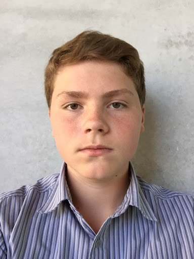
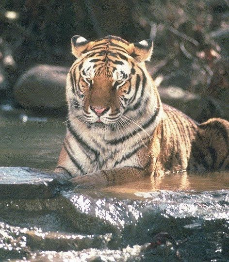

Photoshop Page
Julian Ope Selfie

This is my photo I used to create the Julian Ope Selfie. I stayed with a nuetral face to capture the style Julian Ope has their faces in her art.
This was my Julian Ope selfie in the making,I first finished its features besides the face. I also added colour to see how it would look before I completed the face. The hair was intresting because of what details of it to add and what details to leave out to seem simplistic like her works but to still look like a real person and not a doll.
This was just before I was just about to finish, I was having trouble with the Mouth, Nose, and eyes sizes trying to get their proportions right. This was when I thought the eye and mouth sizes were about right. Also the ears were particularly hard because of the angle my face was. I had to get the size right or it would look like i had no ears or giant ones.
At this stage I was basically done just staring at it for the small details around the face and deciding the background color (other photos had colors to show my idea clearly) The nose i foudn intresting because of her style. Her style is to just add the nose holes and not add too much detail. getting this just right took the longest time out of the whole project and ended up looking pretty good.
3D Text
This was my experiment with photoshop and creating an 3d like image of anything. I chose my name with a fancy font. What we learned was how to create 3D images like this, how to customise them and how to angle and adjust them. I ended with my tiled, red, tilted, fancy font name.
Beth Hoeckel Collage

I decided to use this copyright free image as my main picture in my first collage. I quite liked this image because of the high definition it is in and the amount of ideas i have for it in my head before even starting.
This was my final design for the tiger on my first collage. In this photo the tiger is being lyed on by someone I photoshop off lying on grass onto the tiger making him look like a huge God like creature.
I created the collage's background combining a ancient waterfall in china with a photo of an american lake being swum in. I found this difficult to make trying to combine two quite different photos into one photo that is supposed to look similar, like they flow into eachother. I think the color of the lake (green) helped combined the two photos together.
This is my completed first collage. I thought i was missing something inbetween the tiger and the background. So I decided to put a cloud under the tiger further reinforcing the fact that the tiger is a god like creature
This is my second collage I mostly rushed with the features, that's why most of the photos look unrealistic togetehr. I tried to mix a city image, mario level, superheros, original pokemon sprites and the moon... from legend of zelda. I think it could have been better if i spent a bit more time on it but it ended looking pretty cool in my personal oppinion. Also Henry and Cameron are in this photo.
Quick Links
Home Page
DLSR
Photoshop Page
Microbit